Using VisualShaders
VisualShaders are the visual alternative for creating shaders.
As shaders are inherently linked to visuals, the graph-based approach with previews of textures, materials, etc. offers a lot of additional convenience compared to purely script-based shaders. On the other hand, VisualShaders do not expose all features of the shader script and using both in parallel might be necessary for specific effects.
Note
If you are not familiar with shaders, start by reading Introduction to shaders.
Creating a VisualShader
VisualShaders can be created in any ShaderMaterial. To begin using
VisualShaders, create a new ShaderMaterial in an object of your choice.
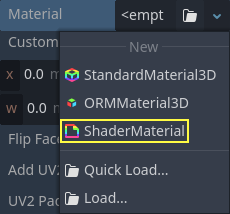
Then assign a Shader resource to the Shader property.

Click on the new Shader resource and the Create Shader dialog will
open automatically. Change the Type option to VisualShader
in the dropdown, then give it a name.

Click on the visual shader you just created to open the Shader Editor. The layout of the Shader Editor comprises four parts, a file list on the left, the upper toolbar, the graph itself, and a material preview on the right that can be toggled off
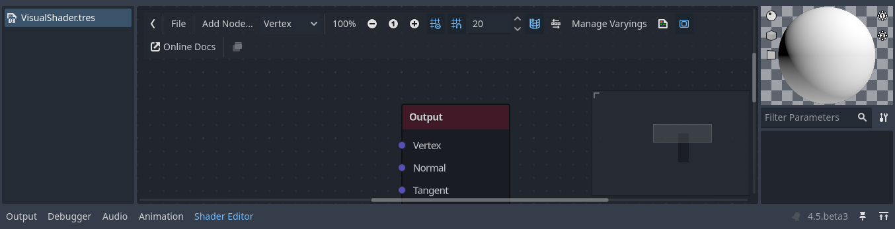
From left to right in the toolbar:
The arrow can be used to toggle the files panel's visibility.
The
Filebutton opens a dropdown menu for saving, loading, and creating files.The
Add Nodebutton displays a popup menu to let you add nodes to the shader graph.The drop-down menu is the shader type: Vertex, Fragment and Light. Like for script shaders, it defines what built-in nodes will be available.
The following buttons and number input control the zooming level, grid snapping and distance between grid lines (in pixels).
The toggle controls if the graph minimap in the bottom right of the editor is visible or not.
The automatically arrange selected nodes button will try to organize any nodes you have selected as efficiently and cleanly as possible.
The Manage Varyings button opens a dropdown that lets you add or remove a varying.
The show generated code button shows shader code corresponding to your graph.
The toggle turns the material preview on or off.
The
Online Docsbutton opens this documentation page in your web browser.The last button allows you to put the shader editor in its own window, separate from the rest of the editor.
Note
Although VisualShaders do not require coding, they share the same logic with script shaders. It is advised to learn the basics of both to have a good understanding of the shading pipeline.
The visual shader graph is converted to a script shader behind the scene, and you can see this code by pressing the last button in the toolbar. This can be convenient to understand what a given node does and how to reproduce it in scripts.
Using the Visual Shader Editor
By default, every new VisualShader will have an output node. Every node
connection ends at one of the output node's sockets. A node is the basic unit to
create your shader. To add a new node, click on the Add Node button on the
upper left corner or right click on any empty location in the graph, and a menu
will pop up.

This popup has the following properties:
If you right-click on the graph, this menu will be called at the cursor position and the created node, in that case, will also be placed under that position; otherwise, it will be created at the graph's center.
It can be resized horizontally and vertically allowing more content to be shown. Size transform and tree content position are saved between the calls, so if you suddenly closed the popup you can easily restore its previous state.
The
Expand AllandCollapse Alloptions in the drop-down option menu can be used to easily list the available nodes.You can also drag and drop nodes from the popup onto the graph.
While the popup has nodes sorted in categories, it can seem overwhelming at first. Try to add some of the nodes, plug them in the output socket and observe what happens.
When connecting any scalar output to a vector input, all components of
the vector will take the value of the scalar.
When connecting any vector output to a scalar input, the value of the
scalar will be the average of the vector's components.
Visual Shader node interface
Visual shader nodes have input and output ports. The input ports are located on the left side of the node, and output ports are located on the right side of the node.
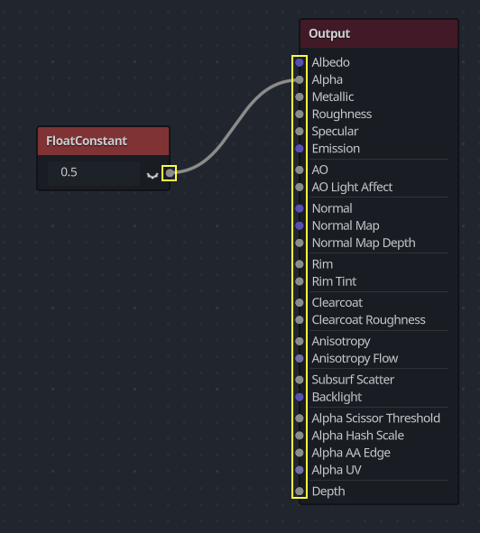
These ports are colored to differentiate type of port:
Type |
Color |
Description |
Example |
|---|---|---|---|
Scalar |
Gray |
Scalar is a single value. |
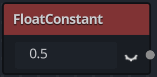 |
Vector |
Purple |
Vector is a set of values. |
|
Boolean |
Green |
On or off, true or false. |
|
Transform |
Pink |
A matrix, usually used to transform vertices. |
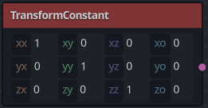 |
Sampler |
Orange |
A texture sampler. It can be used to sample textures. |
|


All of the types are used in the calculations of vertices, fragments, and lights in the shader. For example: matrix multiplication, vector addition, or scalar division.
There are other types but these are the main ones.
Visual Shader nodes
Below are some special nodes that are worth knowing about. The list is not exhaustive and might be expanded with more nodes and examples.
Expression node
The Expression node allows you to write Godot Shading Language (GLSL-like)
expressions inside your visual shaders. The node has buttons to add any amount
of required input and output ports and can be resized. You can also set up the
name and type of each port. The expression you have entered will apply
immediately to the material (once the focus leaves the expression text box). Any
parsing or compilation errors will be printed to the Output tab. The outputs are
initialized to their zero value by default. The node is located under the
Special tab and can be used in all shader modes.
The possibilities of this node are almost limitless – you can write complex
procedures, and use all the power of text-based shaders, such as loops, the
discard keyword, extended types, etc. For example:
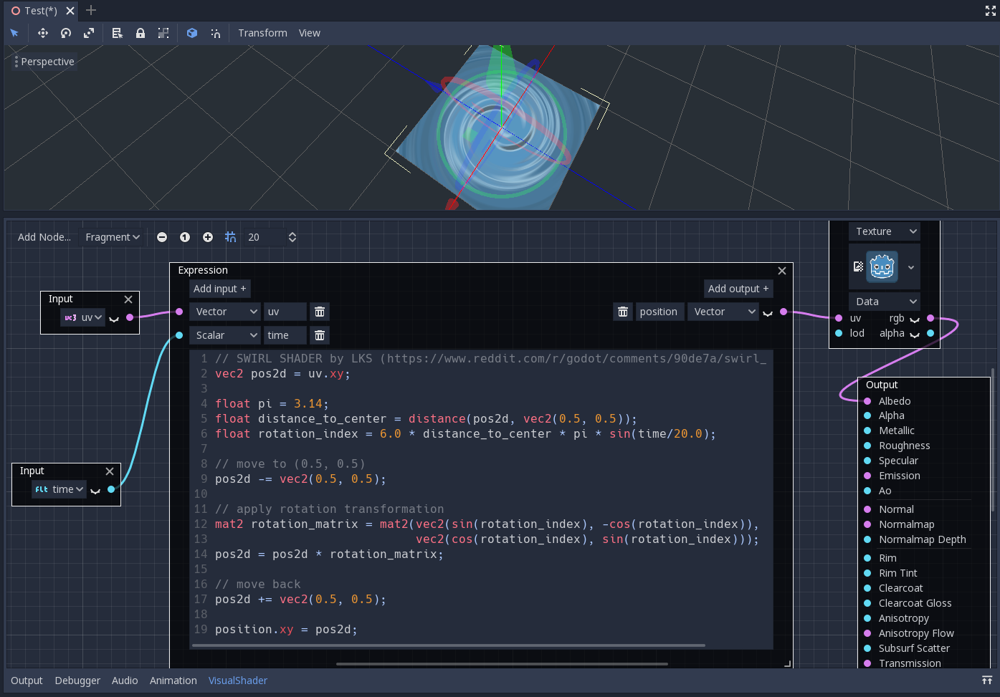
Reroute node
The Reroute node is used purely for organizational purposes. In a complicated
shader with many nodes you may find that the paths between nodes can make
things hard to read. Reroute, as its name suggests, allows you to adjust the path
between nodes to make things easier to read. You can even have multiple reroute
nodes for a single path, which can be used to make right angles.
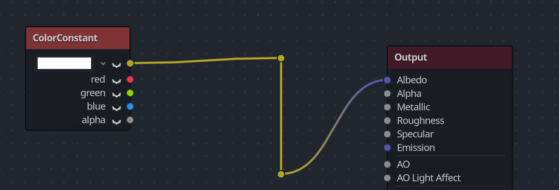
To move a reroute node move your mouse cursor above it, and grab the handle that appears.
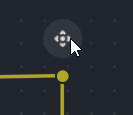
Fresnel node
The Fresnel node is designed to accept normal and view vectors and produces
a scalar which is the saturated dot product between them. Additionally, you can
setup the inversion and the power of equation. The Fresnel node is great for
adding a rim-like lighting effect to objects.

Boolean node
The Boolean node can be converted to Scalar or Vector to represent
0 or 1 and (0, 0, 0) or (1, 1, 1) respectively. This property
can be used to enable or disable some effect parts with one click.
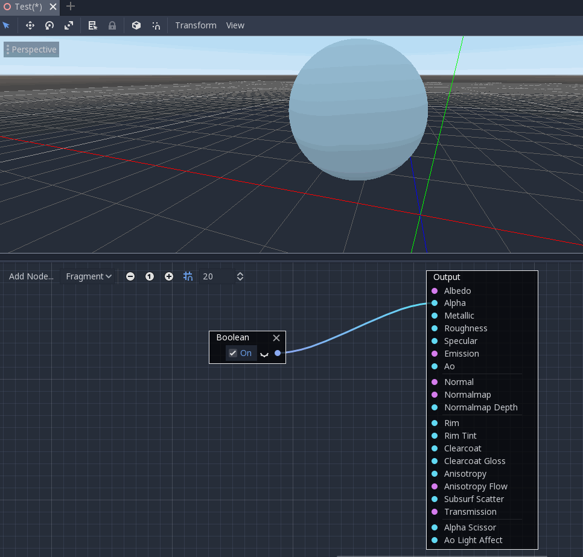
If node
The If node allows you to setup a vector which will be returned the result
of the comparison between a and b. There are three vectors which can be
returned: a == b (in that case the tolerance parameter is provided as a
comparison threshold – by default it is equal to the minimal value, i.e.
0.00001), a > b and a < b.
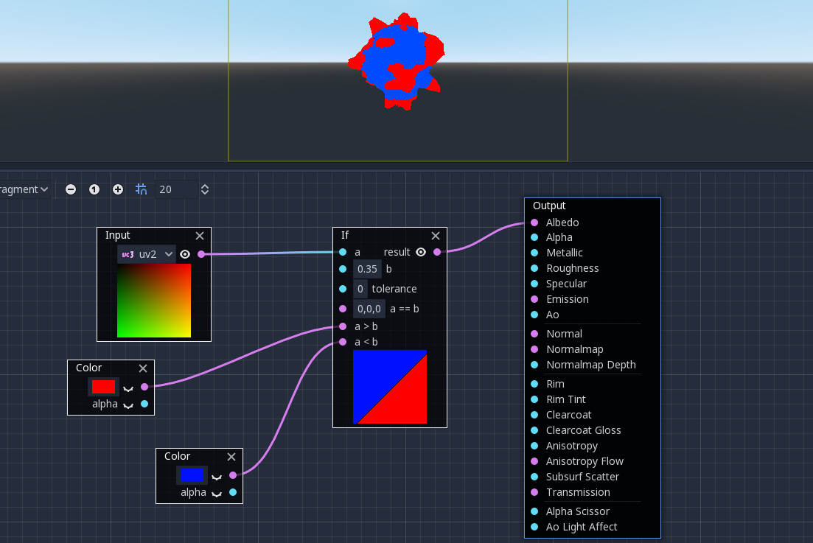
Switch node
The Switch node returns a vector if the boolean condition is true or
false. Boolean was introduced above. If you want to convert a vector
to a true boolean, all components of the vector should be non-zero.
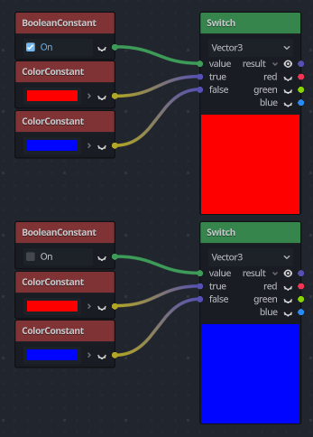
Mesh Emitter
The Mesh Emitter node is used for emitting particles from mesh vertices. This is
only available for shaders that are in Particles mode.
Keep in mind that not all 3D objects are mesh files. a glTF file can't be dragged and dropped into the graph. However, you can create an inherited scene from it, save the mesh in that scene as its own file, and use that.
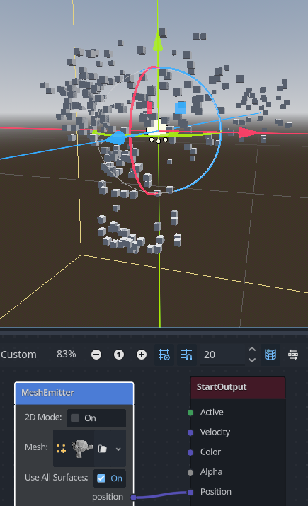
You can also drag and drop obj files into the graph editor to add the node for that specific mesh, other mesh files will not work for this.